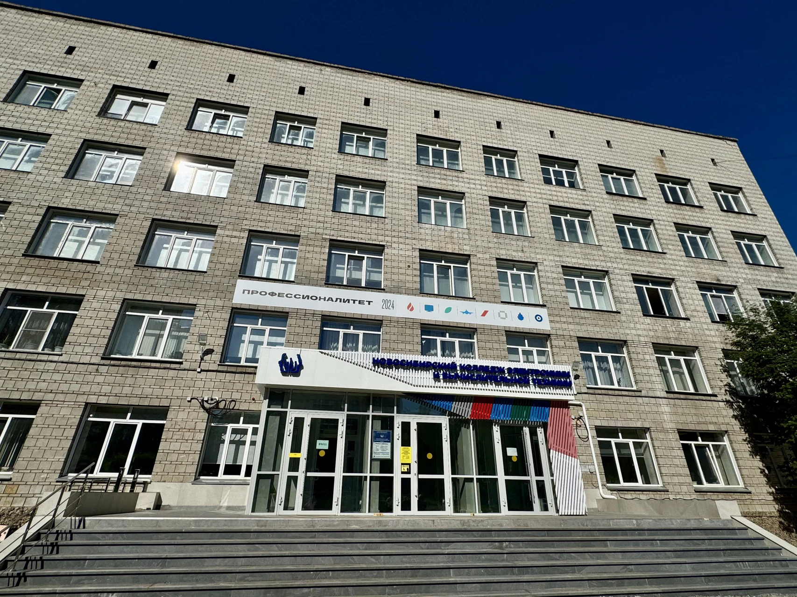
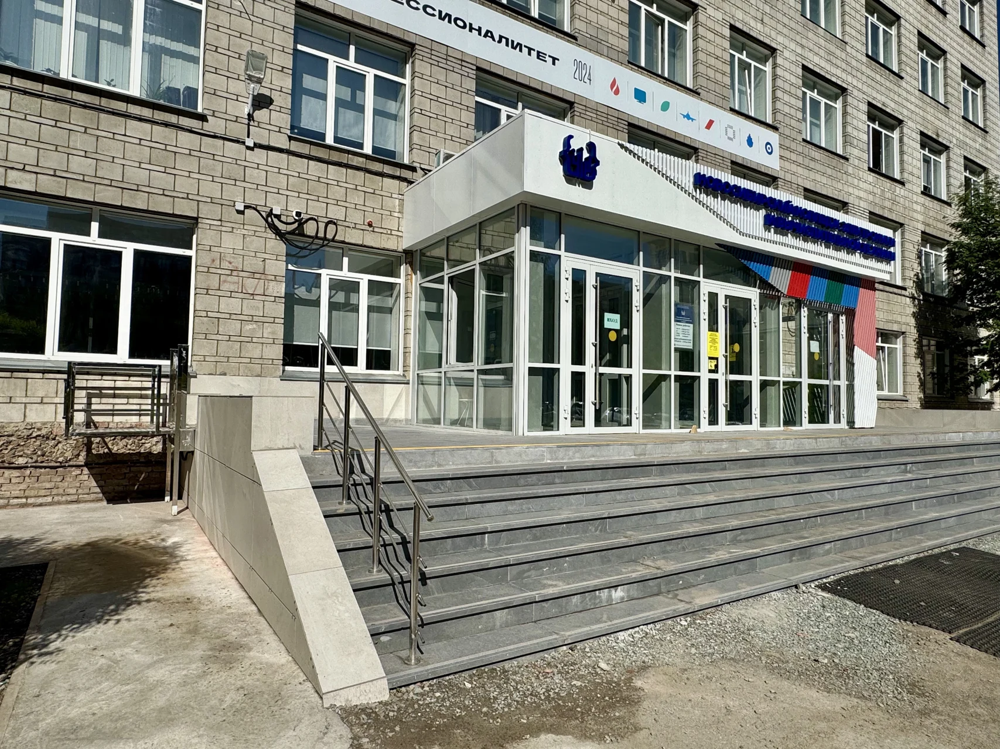
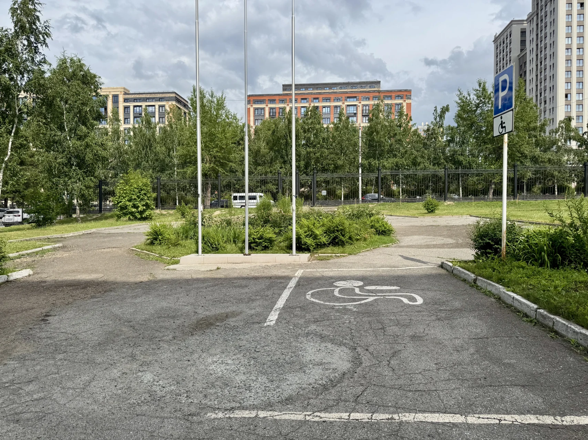
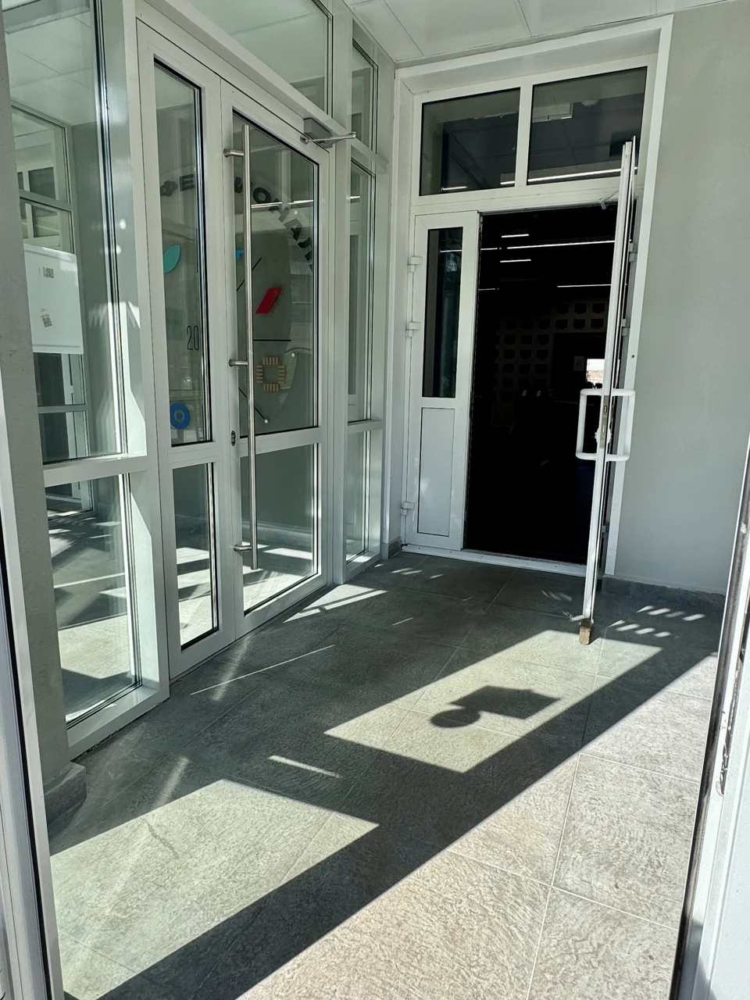
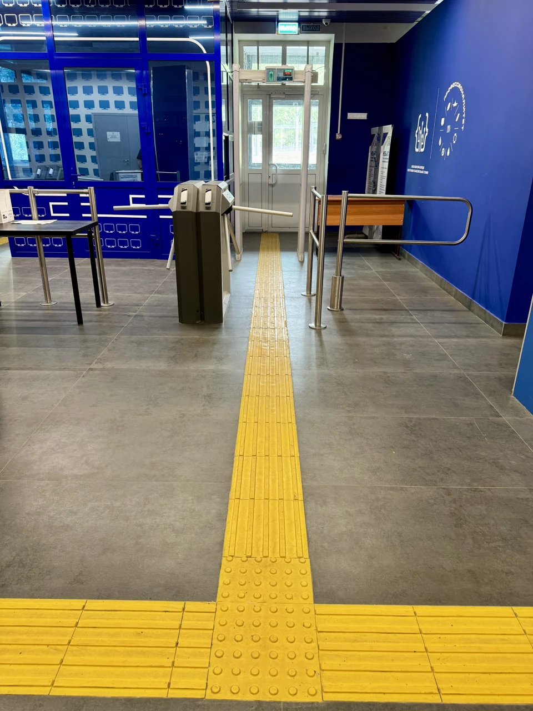
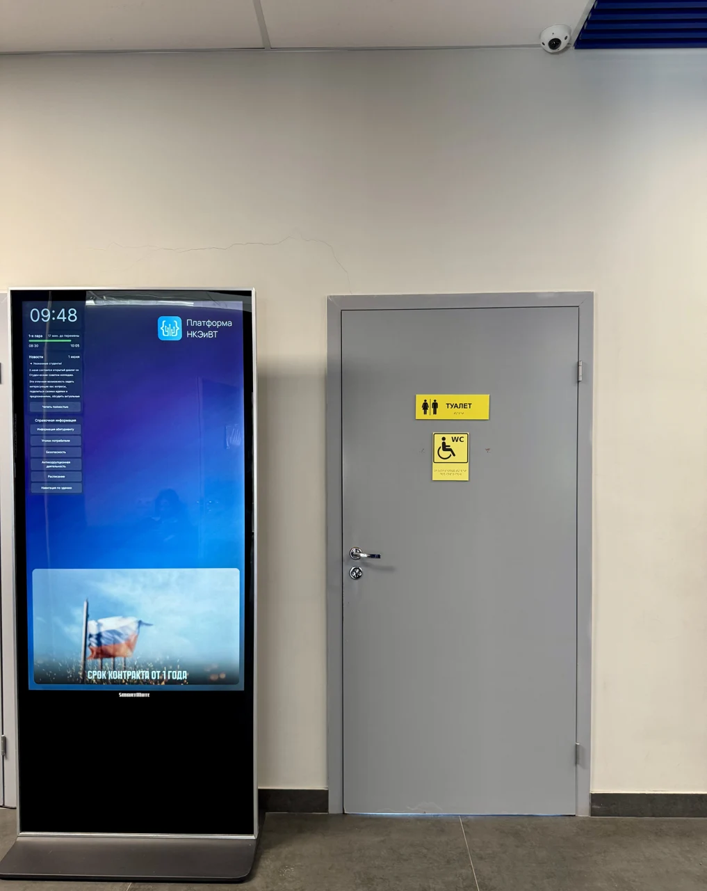
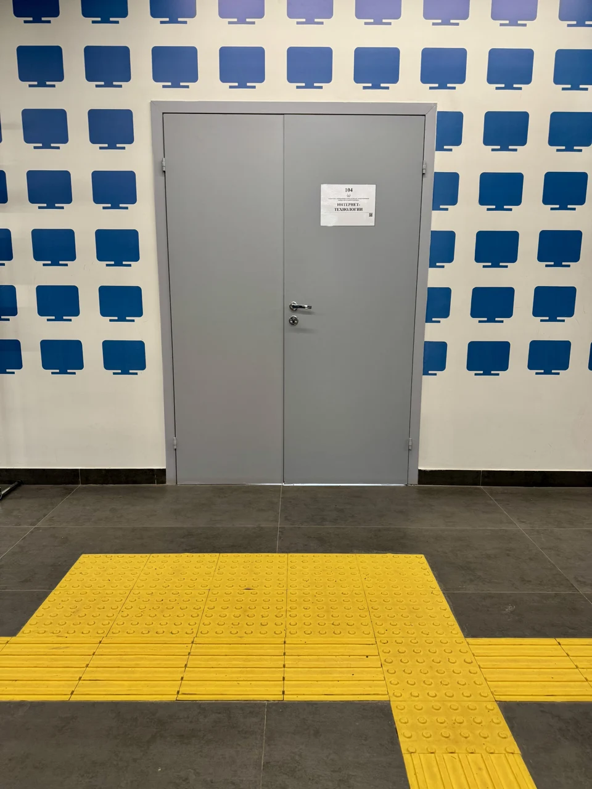

Главная

Сведения об образовательной организации
Материально-техническое обеспечение и оснащённость образовательного процесса. Доступная среда
Материально-техническое обеспечение
и оснащённость образовательного процесса. Доступная среда
Образовательный процесс в Новосибирском колледже электроники и вычислительной техники организован в одном учебном пятиэтажном корпусе общей площадью 4000,3 кв.м., предоставленном колледжу в оперативное управление распоряжением Территориального управления Министерства имущественных отношений Российской Федерации по НСО №1346-р от 10.09.2004 года (свидетельство
о внесении в реестр федерального имущества от 11.12.2002 года, реестровый № 5400929).
Учебный процесс организован в две смены. Общая площадь на одного обучающегося контингента, приведенного к очной форме обучения, составляет около 9 кв.м. Контингент обучающихся, приведенных к очной форме обучения, на 01.09.2022 г. составляет 1393 человека.
В колледже организована доступная среда для инвалидов
и лиц с ОВЗ.
Разрешение Управления Федеральной службы по надзору в сфере защиты прав потребителей и благополучия человека по Новосибирской области Федеральной службы по надзору в сфере защиты прав потребителей и благополучия человека на проведение учебного процесса
в используемых зданиях и помещениях положительное
(Акт проверки Управления Федеральной службы по надзору в сфере защиты прав потребителей и благополучия человека по НСО №3568
от 31.10.12г. с положительным заключением), заключение о соблюдении требований пожарной безопасности УГПН ГУ МЧС России
по Новосибирской области от 06.12.2013.№546.
Общежития нет.
Средства обучения
и воспитания

Об условиях питания и охраны здоровья обучающихся
Доступ к информационным системам и информационно-телекоммуникационным сетям
Об электронных образовательных ресурсах
к которым обеспечивается доступ обучающихся
Сведения о наличии специальных технических средств обучения
Положение об обучении студентов с ограниченными возможностями здоровья
Проведение технической очистки территории
Контракт №ЭМ 2023.5843305 оказание услуг
по предоставлению доступа к информационной телекоммуникационной
сети Интернет
Доступная среда
Перечень профессий и специальностей, курсы повышения квалификации и переподготовки, по которым может вестись подготовка студентов с ограниченными возможностями здоровья:
№
Наименовние профессии/специальности
Шифр
Категории инвалидов
Примечание
1
Оператор информационных систем
и ресурсов
09.01.03
Нарушение слуха
Профессия
2
Информационные системы
и программирование
09.02.07
Нарушение слуха
Специальность
3
Сетевое и системное администрирование
09.02.06
Нарушение слуха
Специальность
4
Обеспечение информационной безопасности автоматизированных систем
09.02.03
Нарушение слуха
Специальность
5
Компьютерные системы и комплексы
09.02.01
Нарушение слуха
Спецальность
6
Твердотельная электроника
11.02.13
Нарушение слуха
Спецальность
7
Монтаж, техническое обслуживание и ремонт электронных приборов и устройств
11.02.16
Нарушение слуха
Спецальность
8
Оператор электронно-вычислительных
и вычислительных машин
16199
Нарушение слуха
Профессия
Паспорт доступности 2021
Порядок по обеспечению условий для бесприпятственного доступа инвалидов
Приказ №962 (о тюторском сопровождении)

Входная зона

Пандус

Парковка

Вход в здание

Входная дверь

Вход в уборную

Учебная аудитория
1. Уровень доступности учреждения
Для обеспечения доступности инвалидов и лиц с ограничениями возможностями здоровья соответствует 1 этаж здания колледжа, в том числе,
спортзал, столовая, библиотека.
Здание колледжа доступно для:
- инвалидов-колясочников;
- инвалидов с нарушенными опорно-двигательного аппарата;
- инвалидов с поражением слуха.
Здание колледжа недоступно для:
- инвалидов с поражением зрения;
- инвалидов с нарушением умственного развития.
2. Данные о наличии инфраструктуры для граждан с инвалидностью и лиц с ОВЗ
Для инвалидов-колясочников, инвалидов с поражениями опорно-двигательного аппарата, а также инвалидов с поражением слуха доступны следующие
структурно-функциональные зоны:
- вход (входы) в здание;
- путь (пути) движения внутри здания (в т.ч. пути эвакуации);
- санитарно-гигиенические помещения;
- пути движения к объекту (от остановки транспорта).
3. Социально-психолого-педагогическое сопровождение обучающихся инвалидов и лиц с ОВЗ
Социально-психолого-педагогическое сопровождение обучающихся инвалидов и лиц с ОВЗ предполагает создание условий для мотивации обучения, проявление индивидуальности и самостоятельности обучающегося, реализации его потребностей в самоутверждении и повышении самооценки ( методы, формы, технологии, принципы, средства обучения); взаимодействие на основе доброжелательности, понимания и принятия обучающегося, формирования эмоционально-положительного отношения к учебной и внеучебной деятельности в пространстве личных возможностей, социализацию (сетевое взаимодействие); выявление и развитие потенциальных возможностей лиц с ОВЗ, помощь в организации познавательной деятельности, адаптацию через волонтерство; поддержание необходимого уровня работоспособности
на уроках ( адаптированные программы, вариативные задания).
Цель социально-психолого-педагогического сопровождения: создание и поддержание комфортной образовательной среды, способствующей наиболее полному развитию интеллектуального, личностного и творческого потенциала обучающихся инвалидов и лиц с ОВЗ с приоритетностью подготовки к полноценной жизни
в обществе.
Задачи: оказывать психологическую и педагогическую помощь в процессе адаптации обучающихся с ОВЗ и инвалидностью к условиям колледжа, в создании атмосферы толерантности в процессе межличностных отношений в студенческом коллективе и колледже в целом; проводить комплексную психологическую диагностику; содействовать в решении актуальных задач развития, обучения, удовлетворении потребностей и разрешении проблем студентов с ОВЗ и инвалидностью (трудности
в обучении, несформированность учебной и профессиональной мотиваций, нарушения эмоционально-волевой сферы, проблемы взаимоотношений в студенческих группах, с преподавателями, родителями; и т. д.); оказывать психологическую помощь форме консультаций обучающимся инвалидам и лицам с ОВЗ; обеспечить информационную и методическую помощь преподавательскому составу колледжа.
Для лиц с ОВЗ и инвалидностью создаются следующие условия: специально приспособленное здание (наличие пандусов, оборудованных туалетов для колясочников
и т. п.); компьютерные классы; кабинет педагога-психолога.
Педагог-психолог определяет особенности личностного развития, состояние эмоционально-волевой сферы, поведенческие особенности и особенности развития познавательной сферы, обучающихся с ограниченными возможностями здоровья.
Психолог проводит психолого-педагогическую диагностику причин и особенностей трудностей обучения, воспитания, развития; определяет уровень развития познавательной деятельности.
Преподаватель, мастер производственного обучения отслеживают уровень освоения основной образовательной программы.
Социально-психолого-педагогическое сопровождение обучающихся инвалидов и лиц с ОВЗ, созданные условия в образовательной организации способствуют полному развитию интеллектуального, личностного и творческого потенциала обучающихся данной категории в подготовке к полноценной жизни в обществе и успешному освоению профессиональной образовательной программы.
За помощью можно обратиться к педагогам-психологам колледжа - Карачевой Светлане Александровне, Скоморощенко Варваре Александровне. Кабинет №403.
4. Порядок организации профориентационной работы среди инвалидов и лиц с ограниченными возможностями здоровья, их родителей
Профориентационная работа среди инвалидов и лиц с ОВЗ, их родителей проводится педагогом-организатором и педагогом-психологом колледжа.
Профессиональная ориентация инвалидов является частью общей системы профориентации, при этом профориентации инвалидов присущи особые черты,
связанные с необходимостью диагностирования особенностей здоровья и психики инвалидов, характера дезадаптации, осуществления мероприятий
по их реабилитации, коррекции. Наличие физических ограничений здоровья инвалидов означает понимание особой природы процесса их взаимодействия
с окружающей средой, в том числе в плане профсамоопределения.
В основе индивидуального подхода, обеспечивающего дифференцированную готовность инвалидов к профессиональному выбору, должна лежать оценка следующих значимых факторов: требований, предъявляемых конкретной специальности к здоровью инвалида; условий труда, значимых с точки зрения сохранения здоровья; медицинских ограничений профессиональной пригодности при различных заболеваниях.
Профессиональная ориентация в колледже представляет научно-обоснованную систему мер, способствующую профессиональному самоопределению личности, формированию будущего специалиста, умеющего с наибольшей пользой для себя и общества применить в профессиональной деятельности свои склонности
и способности, свободно ориентироваться и быть конкурентоспособным на рынке труда.
Целью деятельности по профессиональной ориентации среди инвалидов и лиц с ОВЗ, их родителей является приведение образовательных потребностей абитуриентов
с инвалидностью и с ОВЗ в соответствие с рынком труда на основе личностно-ориентированного подхода и создание условий для формирования ими обоснованных профессионально-образовательных планов с учетом психофизиологических особенностей личности, а также формирование у обучающихся инвалидов и лиц с ОВЗ сознательного, ответственного отношения к получению профессионального образования и последующего трудоустройства по выбранной профессии, воспитание конкурентоспособного специалиста, обладающего активной жизненной позицией и профессиональной мобильностью.
По вопросам профориентации и консультаций по данному направлению, а также по вопросам трудоустройства можно обратиться
к начальнику отдела практической подготовки и содействия трудоустройству Бочкареву Сергею Сергеевичу. Кабинет №508.
На этой странице
О материально-техническом обеспечении
и оснащённости образовательного процесса
Доступная среда